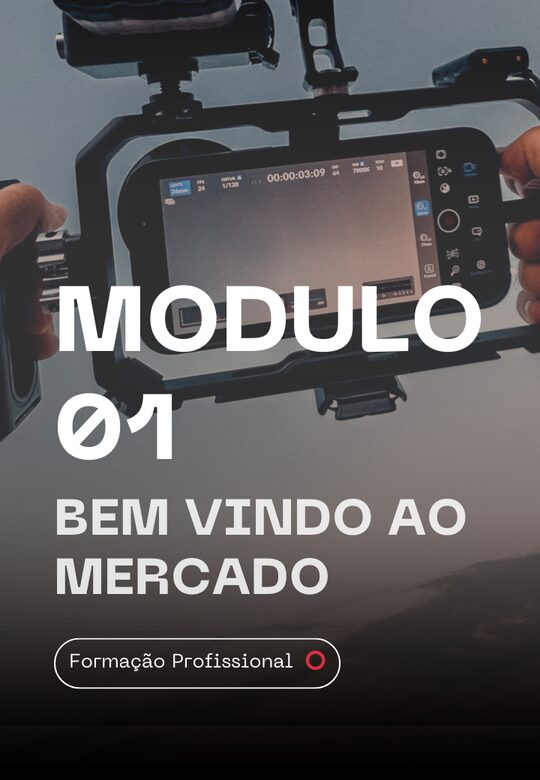
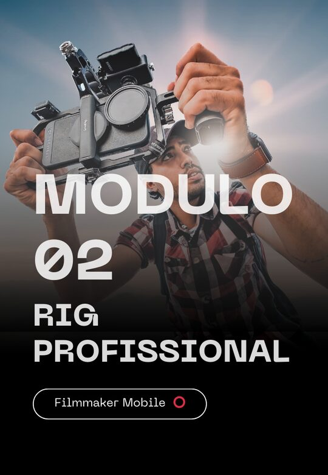
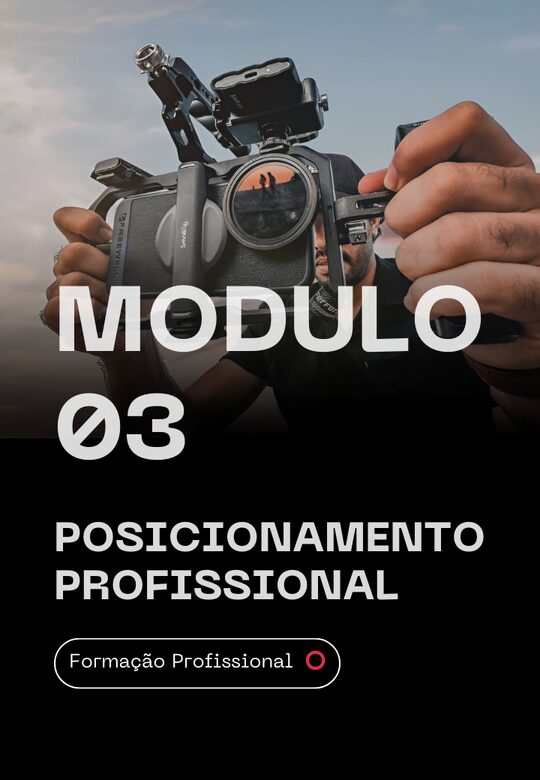
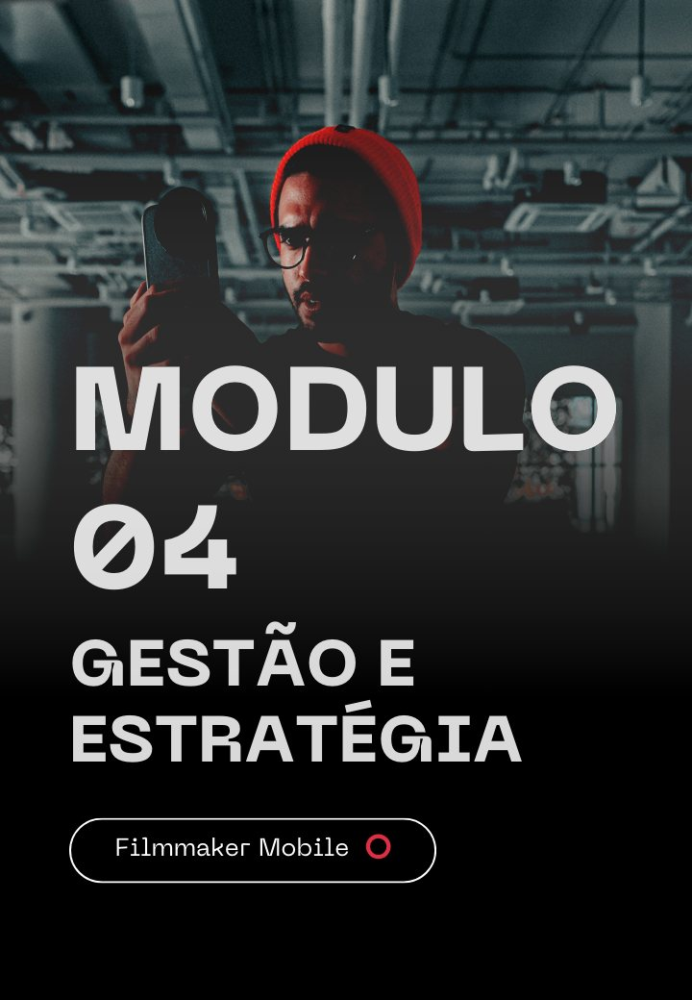
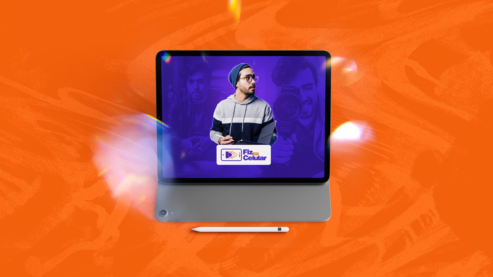
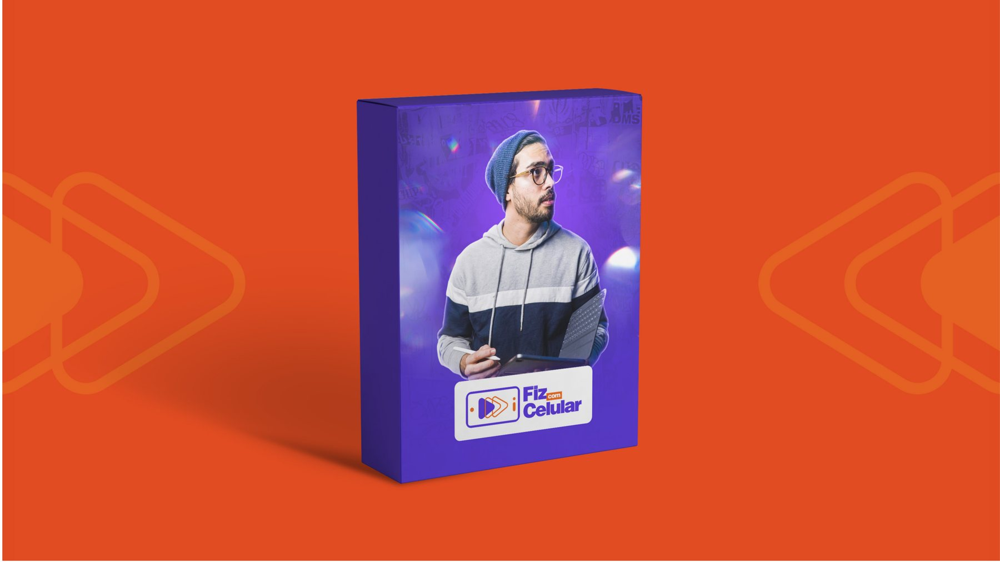

Do enquadramento ao corte
Gravação, iluminação, som e edição, tudo com o aparelho que você já tem.
Aprenda o método dos 5 takes e edite nos principais apps. Do zero, sem equipamento caro.
Quero aprender agoraVídeo de apresentação do curso Fiz com Celular, com André Loureiro.
São 5 módulos, da captação ao mercado: você aprende a gravar, montar o equipamento, se posicionar, gerir a carreira e usar inteligência artificial, com aulas práticas de gravação e edição no celular.




Passo a passo de gravação e edição, direto no celular.
Hoje o celular tem tudo para fazer vídeos incríveis, mas a maioria das pessoas grava, não sabe o que fazer com o material e deixa o arquivo parado na galeria.
O Fiz com Celular mostra o caminho completo: como filmar com o método dos 5 takes, como organizar os arquivos e como editar até o vídeo ficar pronto para postar.
André Loureiro é filmmaker, diretor de fotografia e empresário. No curso, ele ensina o método que usa para gravar e editar com o celular.
Gravação, iluminação, som e edição, tudo com o aparelho que você já tem.

Acesso online, para estudar quando e onde quiser.

Os 5 takes e os principais aplicativos de edição.
Diretor audiovisual e filmmaker há mais de 13 anos, já trabalhou com grandes produtores de conteúdo da internet, como Whindersson Nunes, Mr Poladoful, O Que Não Dizer e Gabi Luthai. Hoje ensina qualquer pessoa, mesmo sem experiência, a criar vídeos cinematográficos usando apenas o celular.
Aulas práticas, com exemplos reais, nos principais aplicativos de edição.
Tudo por apenas R$ 197acesso a todo o conteúdo do curso
A compra é feita pela Hotmart, que garante no mínimo 7 dias para pedir reembolso. Assista às primeiras aulas e decida com tranquilidade.
Não. O treinamento parte do zero e mostra o passo a passo da gravação e da edição.
Não. O foco é extrair o máximo do celular que você já tem. Também há aulas opcionais sobre acessórios, como gimbal e lapela.
A Hotmart garante no mínimo 7 dias para pedir reembolso depois da compra.
O treinamento é todo online, na área de membros da Hotmart, e você acessa de onde preferir.
Online, pela área de membros da Hotmart, quando e onde você quiser.
Entre no Fiz com Celular e aprenda a gravar e editar vídeos que parecem filme.
Quero entrar no Fiz com Celular